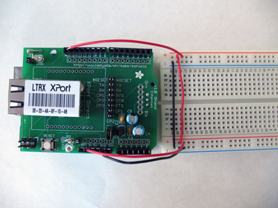
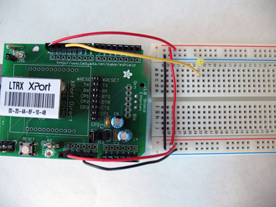
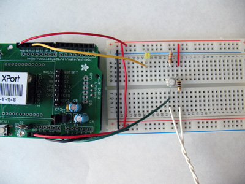
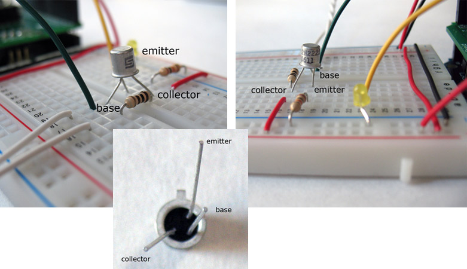
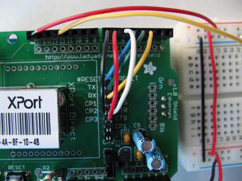
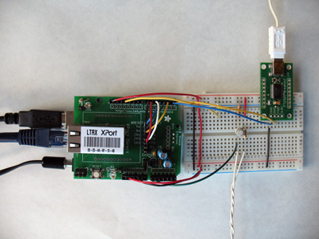

Tweeting Plant
About
This project connects you to your plant via online Twitter status updates that reach you anywhere in the world. When your plant needs water, it will post to let you know, and send its thanks when you show it love.
Information
Difficulty: Hard
Estimated time: 4 hours
Story
The tweeting arduino plant is a fun project that brings your plant to life! You can play around with this project and adjust your plants' tweets and even when it calls for help. Follow along below to get your plant talking too.
The Botanicalls Twitter plant project has a few different status updates, based upon current conditions:
- When the moisture level of the plant's soil drops below the satisfactory threshold, it will send a status update that the plant needs to be watered.
- If the soil moisture drops below a critical level the plant will twitter that it is urgently in need of watering.
- Any rapid rise in soil moisture will be detected as a watering event. The plant will then determine if the soil moisture has risen to the desired level for a proper watering. If it has, then it will twitter its thanks.
- If a watering event occurs, but the soil moisture has not reached the desired level, the plant will twitter to report that it was watered, but not sufficiently.
- Likewise, if a watering event occurs, but the plant was not in need of water yet, the plant will twitter to complain that it is being over watered.
Components
The following hardware components were used in this project:
- 1x Plant
- 1x Arduino
- 1x USB Cable
- 1x Breadboard
- 1x Adafruit Xport Shield
- 1x Xport or Xport Direct
- 1x 9v DC Power Adapter
- 1x Ethernet Cable
- 1x 10K Ohm resistor
- 1x 100 Ohm resistor
- 1x 2N222A or 2N3904 transistor
- 2x nails
- Wiring
- Soldering Iron
- Zterm or HyperTerminal, and a Twitter Account
Schematics and Assembly
Figure 1
Figure 2
Figure 3
Figure 4
Figure 5
Figure 6 (Optional)
Instructions
Hardware Connections:
Figure 1:
Connect the Arduino's 3.3V power and ground to both sides of the breadboard. Also connect 3V power to the AREF pin on the Arduino. This will be a reference voltage for the moisture sensor.
Figure 2:
Connect the positive leg of the LED to Arduino digital pin 13. The negative (shorter) leg of the LED connects to the ground bus.
Figure 3 and 4:
Soil moisture sensing (transistor) circuit connected to XPort shield. The transistor has three leads coming out of the bottom they are called:
- 1. emitter
- 2. base
- 3. collector
It's important that each lead is connected properly, so take care with this step and double-check your setup befor applying power to the circuit. The emitter is connected to Arduino analog pin 0, and also via a 10K Ohm resistor to the ground bus. The base is wired to one of the moisture probe nails. The other moisture probe nail is connected via a 100 Ohm resistor to the 3.3 V power bus. Finally, the collector pin of the transistor is connected directly to the 3.3 V power bus.
Figure 5:
Connections between XPort and Arduino Shield:
- XPort TX to Arduino digital pin 3
- XPort RX to Arduino digital pin 2
- XPort Reset to Arduino digital pin 4
- XPort DTR to Arduino digtal pin 5
- XPort CTS to Arduino digital pin 6
- XPort RTS to Arduino digital pin 7
Figure 6:
Attach and connect USB-serial FTDI adaptor for debugging. (This step is optional.) The GND pin connects to the ground bus, the RX pin connects to Arduino digital pin 1. (These photos show the TX pin connected to Arduino digital pin 0, but this connection is not required.) Do not connect anything to the 3.3V pin on the USB-serial adaptor.
Coding Breakdown:
Reference figure 7- you will need to download XPort and configure your XPort's Channel 1 to use Flow 02 and ConnectMode to D4. For a good tutorial check out this XPort tutorialfrom LadyAda.net for more information on connecting with and setting up XPort.
Plug in your power supply and Ethernet cable then connect the USB cables to your computer.
Open the BotanicallsTwitter sketch in Arduino. You'll need to make at least one change before uploading the code:
Update the line that begins with #define USERNAMEPASS "username:password" with the real username and password for your Twitter account, separated by a : (colon)
You may also want to change some other settings. The Botanicalls system operates based on a variety of moisture thresholds. These will vary by plant, soil composition and even your own personal horticultural style. Start with the default values, and adjust until you are happy with the system's behaviors:
This line defines the value between 0 and 1023 below which the plant is in need of water:
#define MOIST 450
This line defines the value between 0 and 1023 that defines an urgent state of dryness:
#define DRY 350
This line defines the moisture value between 0 and 1023 that represents a proper watering.
#define SOAKED 600
This line defines the positive change in moisture level that indicates a watering event has occurred.
#define WATERING_CRITERIA 100
The plant's Twitter messages are defined in the "checks" tab. The Arduino has very limited RAM memory for text strings, so keep these messages very short. If they get to long you'll overflow the memory stack and the system will begin to behave erratically.
There are a variety of other settings that can easily be changed to suit your taste including sampling intervals, quantity of samples, Arduino pin connections and so forth. These are documented in the comments for each setting.
Final Steps:
When you are ready to upload the code, select the correct serial port and board type on the Tools menu, then select Upload to I/O Board from the File menu. (You may need to disconnect the wire from the Arduino digital pin 0 that connects to the USB-serial adapter's TX port to avoid an error message. We don't use this connection in the basic example anyway.)
Once the code is uploaded, your system is ready to go. Monitor the USB-serial FTDI connection in a terminal program like HyperTerm or ZTerm with the following settings:
- 9600 baud
- 8 data bits
- 1 start bit
- No parity
- No flow control of any kind (neither hardware handshaking or Xon/Xoff should be enabled).
When you power up the system you should see a message "Botanicalls starting..." Next you will see a series of moisture readings, interspersed occasionally with a watering detection reading. By touching the nails together, you can simulate a high level of soil moisture. By moving them apart, you will simulate a high level of dryness. Use this procedure to test the system. When BotanicallsTwitter has a message to send, you will see a series of Twitter connection messages, followed by a long string of HTML responses. A final message will let you know if the twitter message was sent successfully or not. Check your Twitter account to see if the message arrived properly.
Code
Download the  BotanicallsTwitter.zip library.
BotanicallsTwitter.zip library.
The unzipped Botanicalls Twitter folder should be put in the Arduino documents directory (MyDocuments\Arduino on Windows or Documents:Arduino on the Mac). Restart the Arduino IDE and select File>Sketch.
Neither the debug output or the Arduino USB connection is needed for day-to-day operation of the Botanicalls Twitter system, so those connections can be removed. The moisture probes made with the nails should be inserted into the plant's soil about midway between the rim of the pot and the plant. Space them about an inch (3 cm) apart. Be sure to check the nails periodically to monitor for excessive corrosion, and to make sure that the solder connections are still strong.